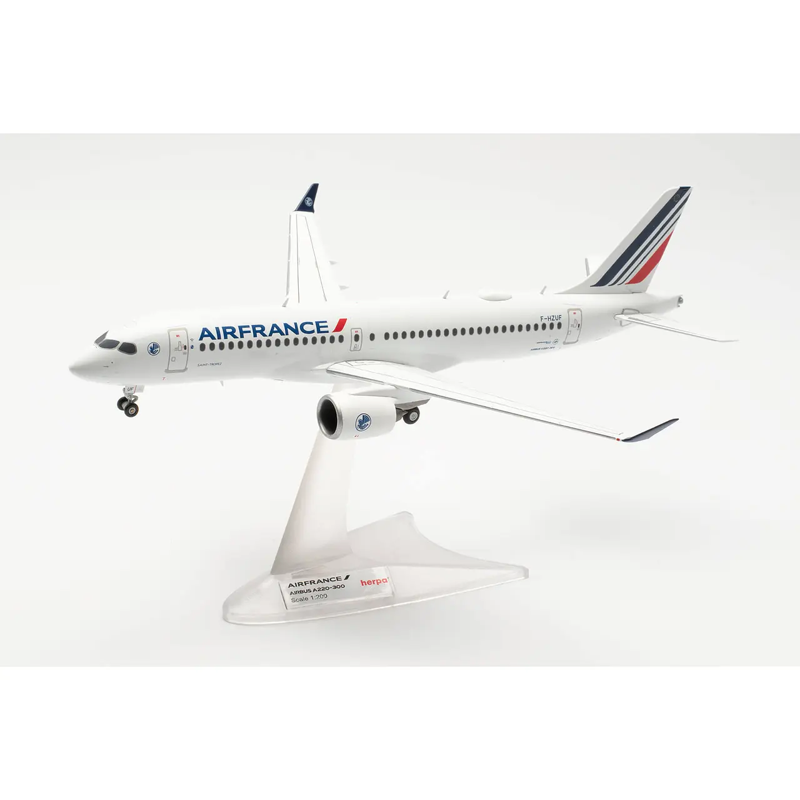
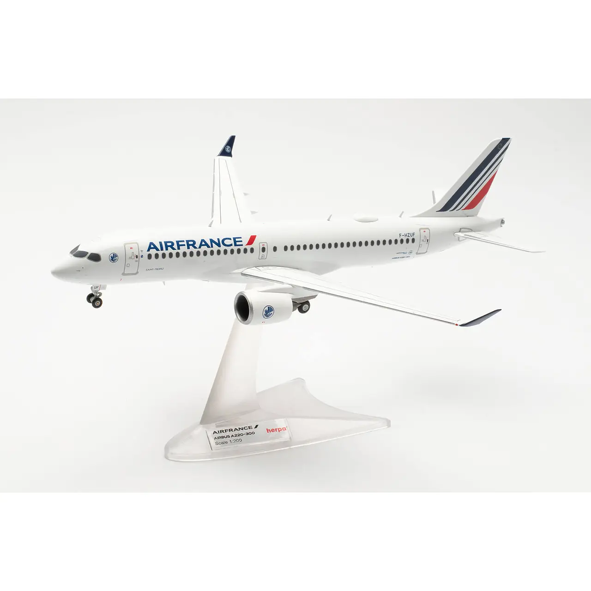

Air France
Avión Colección A220-300 Air France 1/200 $389.000 COP
Descripción:
Herpa Avión Colección A220-300 Air France
En 2021, Air France renovó discretamente su decoración y, al mismo tiempo, prosiguió la
modernización de su flota. Anteriormente era el sustituto del Boeing 747 y del Airbus A380, pero
desde 2021 los Airbus A318 y A319 más pequeños han sido eliminados con nada menos que 60 nuevos
A220-300. El F-HZUF fue uno de los primeros en entrar en servicio en diciembre de 2021 con el nombre
de bautismo de la sofisticada comunidad mediterránea de St. Tropez. El modelo se produjo utilizando
un nuevo molde que presenta mejoras en las alas y los motores.